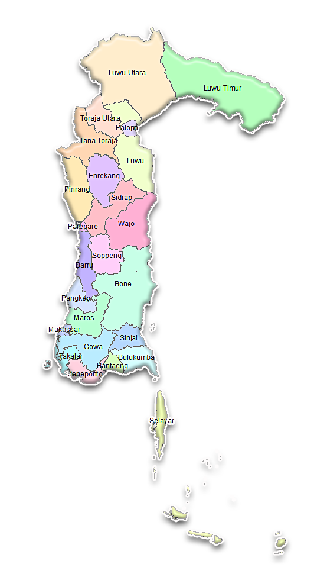

Profil Provinsi Sulawesi Selatan
Kembali ke Beranda

Wilayah & Statistik
Luas Wilayah: 123.456 km²
Wilayah Administrasi Pemerintahan: 10 Kabupaten, 3 Kota
Batas Wilayah: Utara - Laut A, Selatan - Provinsi B, Timur - Laut C, Barat - Provinsi D
Jumlah Pulau: 1.234 Pulau
Panjang Garis Pantai: 5.678 km
Jumlah Penduduk: 8.765.432 Jiwa
Laju Pertumbuhan Penduduk: 1,2% per tahun
Kepadatan Penduduk: 120 jiwa/km²
← Kembali ke Beranda